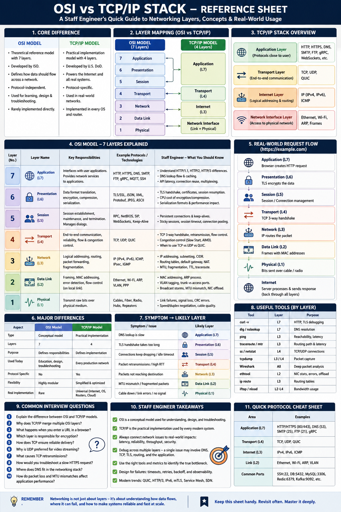

Two models, one Internet — understanding where production problems live
Why It Matters
OSI gives you a mental model for debugging. TCP/IP is what actually runs. A Staff Engineer never says "Layer 4 issue" in isolation — they say: Is TCP retransmitting? Is TLS handshake slow? Is DNS lookup adding 200ms? Understanding both models helps pinpoint where a problem lives.
Layer Mapping
OSI vs TCP/IP — Key Differences
| Aspect | OSI | TCP/IP |
|---|---|---|
| Type | Conceptual model | Practical implementation |
| Layers | 7 | 4 |
| Purpose | Defines responsibilities | Defines implementation |
| Used Today | Education & debugging | Every production network |
| Protocol Specific | No (protocol-agnostic) | Yes |
| Real Implementation | Rarely directly | Universal (Linux, Windows, macOS) |
OSI is the blueprint. TCP/IP is the working engine. Use OSI to think; use TCP/IP to troubleshoot.
Full Layer Reference
| OSI Layer | TCP/IP | Responsibility | Examples |
|---|---|---|---|
| L7 Application | Application | User-facing communication | HTTP, HTTPS, DNS, SMTP, FTP, gRPC |
| L6 Presentation | Application | Encryption, compression, serialization | TLS, SSL, JSON, Protobuf, gzip |
| L5 Session | Application | Session management, connection reuse | WebSockets, RPC, Keep-Alive |
| L4 Transport | Transport | Reliable/unreliable delivery, flow control | TCP, UDP, QUIC |
| L3 Network | Internet | Routing, logical addressing | IPv4, IPv6, ICMP |
| L2 Data Link | Network Interface | Frames, MAC addressing, error detection | Ethernet, Wi-Fi, ARP, VLAN |
| L1 Physical | Network Interface | Electrical/optical bit transmission | Copper, Fiber, Radio, Switch ports |
Layer Deep Dives — Staff Engineer Concerns
L1 Physical
Moves raw bits over physical media (cable, fiber, radio).
Staff concerns: link failures, cable issues, duplex mismatch, CRC errors, speed negotiation
L2 Data Link
Transfers frames within a local network. MAC addressing, VLAN tagging, ARP.
Staff concerns: broadcast storms, incorrect VLANs, MTU mismatch, NIC offloading, packet drops
L3 Network
Routes packets between networks. IP addressing, subnetting, packet forwarding.
Staff concerns: wrong routing, NAT issues, packet fragmentation, multi-region routing, load balancing
L4 Transport
TCP (reliable, ordered), UDP (fast, unreliable), QUIC (UDP-based, multiplexed).
Staff concerns: TCP retransmissions, high RTT, congestion, head-of-line blocking, connection pooling
L5 Session
Maintains communication sessions — DB connections, WebSocket sessions, RPC channels.
Staff concerns: sticky sessions, session expiration, idle timeouts, connection reuse
L6 Presentation
Encryption (TLS), compression (gzip), serialization (JSON, Protobuf).
Staff concerns: TLS handshake latency, CPU overhead, serialization cost, cert expiry
L7 Application
HTTP, HTTPS, DNS, gRPC, SMTP, FTP, MQTT.
Staff concerns: API latency, DNS delays, HTTP/2 multiplexing, REST vs gRPC, HTTP/3 adoption
Real-World Request Flow — https://example.com
Each layer adds a header on the way down (encapsulation) and strips it on the way up (decapsulation). A single user request touches all seven layers twice.
Production Debugging — Symptom → Layer
| Symptom | Likely Layer | Tool |
|---|---|---|
| DNS lookup slow | L7 Application | dig, nslookup |
| TLS handshake too long | L6 Presentation | curl -v, openssl s_client |
| DB connections keep closing | L5 Session | ss -s, app logs |
| TCP retransmissions | L4 Transport | ss, tcpdump |
| Cross-region routing issue | L3 Network | traceroute, ip route |
| MTU mismatch, packet drops | L2 Data Link | ethtool, ip link |
| Cable / switch failure | L1 Physical | ethtool, hardware check |
Essential Debugging Tools
| Tool | Layer | Purpose |
|---|---|---|
curl -v | L7 / L6 | HTTP headers, TLS handshake timing |
dig, nslookup | L7 | DNS resolution debugging |
ping | L3 | Reachability and round-trip latency |
traceroute | L3 | Hop-by-hop routing path |
ss, netstat | L4 | TCP socket states, connection counts |
tcpdump | L3/L4 | Raw packet capture + analysis |
Wireshark | All layers | Deep packet inspection with GUI |
ethtool | L1/L2 | NIC config, errors, speed negotiation |
ip route | L3 | Routing table inspection |
Staff Engineer Thinking
Junior
What are the 7 OSI layers?
Senior
Which layer is causing this issue?
Staff asks
Common Interview Questions
Key Takeaways
